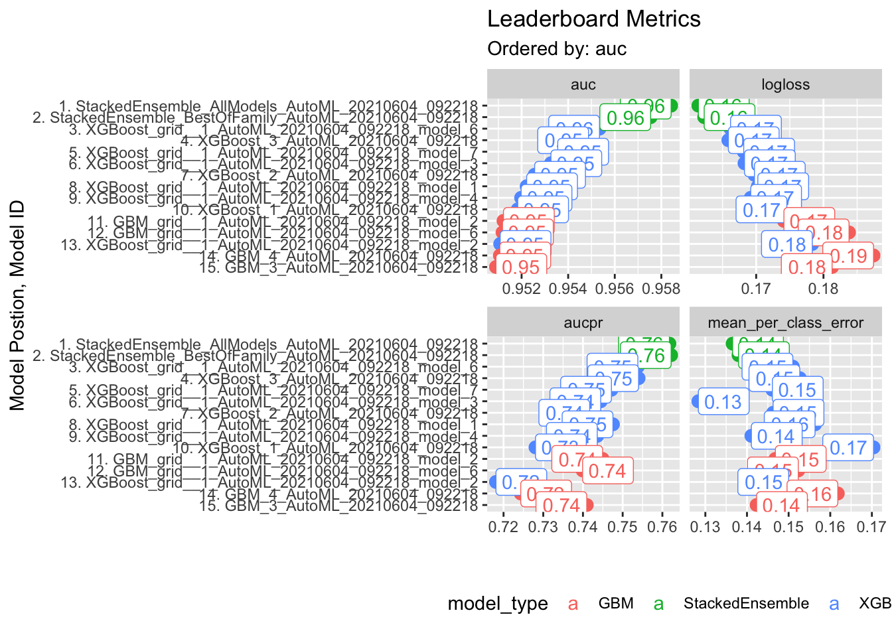
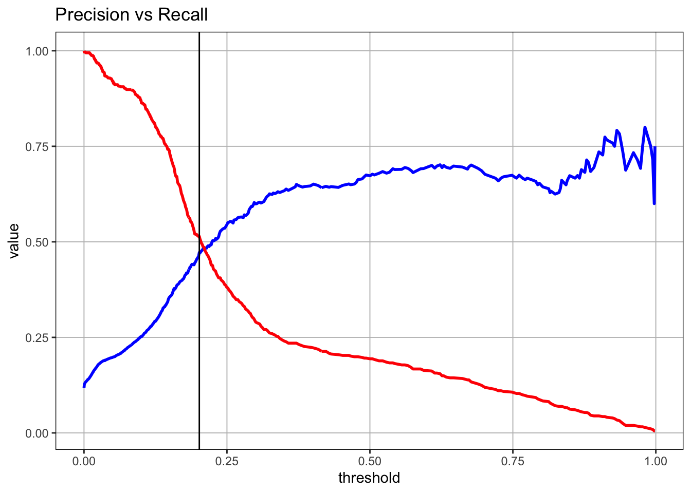
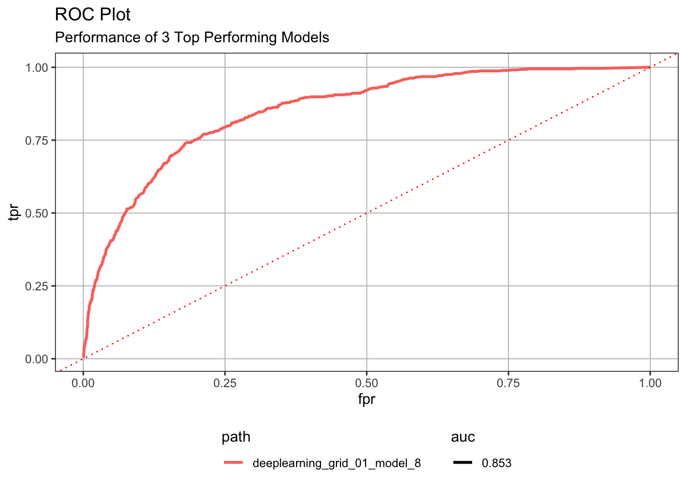
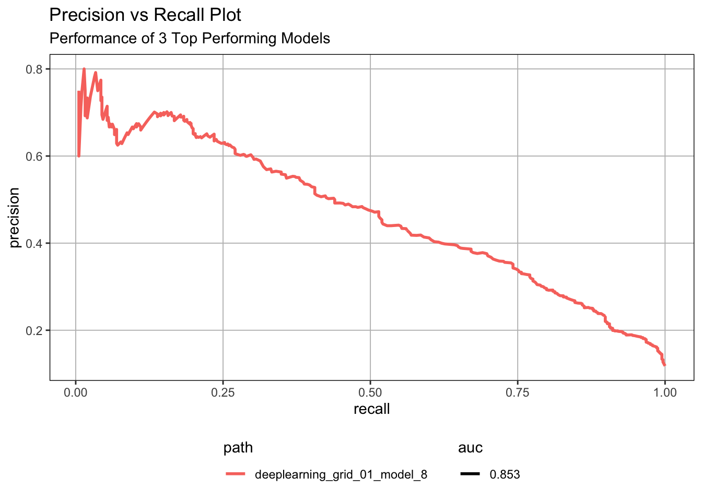
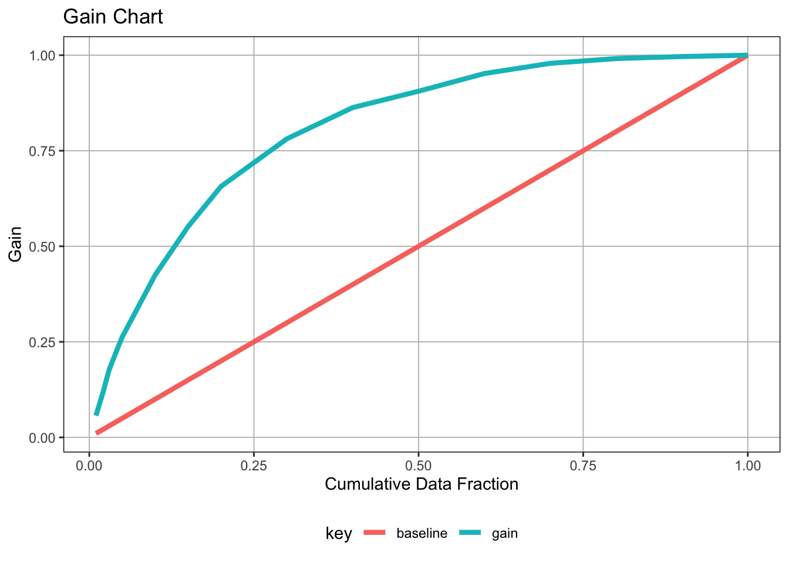
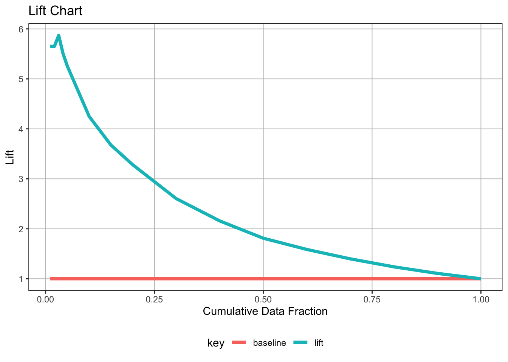
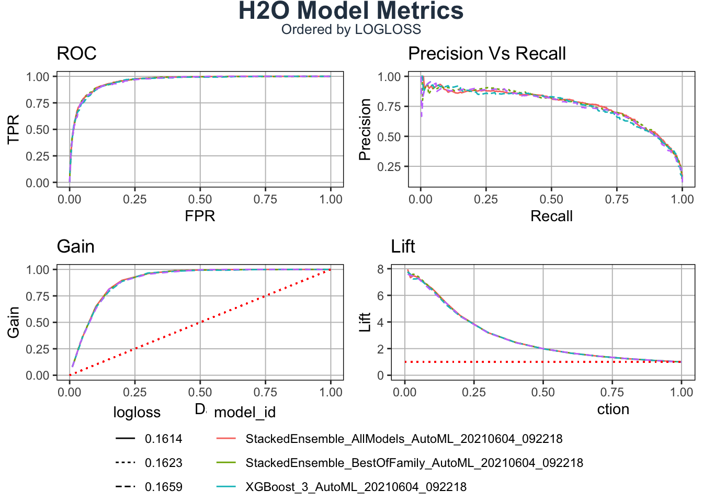

library(tidyverse)
# Modeling
library(parsnip)
# Pre-processing & Sampling
library(recipes)
library(rsample)
# Modeling Error Metrics
library(yardstick)
library(workflows)
library(tune)
product_data <- read_csv("./01_ml_fund_source/Business\ Decisions\ with\ Machine\ Learning/product_backorders.csv")
product_data2 <- product_data %>%
mutate(
product_backorder = went_on_backorder %>% str_to_lower() %>% str_detect("yes") %>% as.numeric()
) %>%
mutate(product_backorder = as.factor(product_backorder)) %>%
select(-c(went_on_backorder))
glimpse(product_data)## Rows: 19,053
## Columns: 23
## $ sku <dbl> 1113121, 1113268, 1113874, 1114222, 1114823, 1115453…
## $ national_inv <dbl> 0, 0, 20, 0, 0, 55, -34, 4, 2, -7, 1, 2, 0, 0, 0, 0,…
## $ lead_time <dbl> 8, 8, 2, 8, 12, 8, 8, 9, 8, 8, 8, 8, 12, 2, 12, 4, 2…
## $ in_transit_qty <dbl> 1, 0, 0, 0, 0, 0, 0, 0, 0, 0, 0, 0, 0, 0, 0, 0, 1, 0…
## $ forecast_3_month <dbl> 6, 2, 45, 9, 31, 216, 120, 43, 4, 56, 2, 5, 5, 54, 4…
## $ forecast_6_month <dbl> 6, 3, 99, 14, 31, 360, 240, 67, 6, 96, 4, 9, 6, 72, …
## $ forecast_9_month <dbl> 6, 4, 153, 21, 31, 492, 240, 115, 9, 112, 6, 13, 9, …
## $ sales_1_month <dbl> 0, 1, 16, 5, 7, 30, 83, 5, 1, 13, 0, 1, 0, 0, 1, 0, …
## $ sales_3_month <dbl> 4, 2, 42, 17, 15, 108, 122, 22, 5, 30, 2, 5, 4, 0, 3…
## $ sales_6_month <dbl> 9, 3, 80, 36, 33, 275, 144, 40, 6, 56, 3, 8, 5, 0, 4…
## $ sales_9_month <dbl> 12, 3, 111, 43, 47, 340, 165, 58, 9, 76, 4, 11, 6, 0…
## $ min_bank <dbl> 0, 0, 10, 0, 2, 51, 33, 4, 2, 0, 0, 0, 3, 4, 0, 0, 0…
## $ potential_issue <chr> "No", "No", "No", "No", "No", "No", "No", "No", "No"…
## $ pieces_past_due <dbl> 1, 0, 0, 0, 3, 0, 0, 0, 0, 0, 0, 0, 0, 0, 0, 0, 0, 0…
## $ perf_6_month_avg <dbl> 0.90, 0.96, 0.81, 0.96, 0.98, 0.00, 1.00, 0.69, 1.00…
## $ perf_12_month_avg <dbl> 0.89, 0.97, 0.88, 0.98, 0.98, 0.00, 0.97, 0.68, 0.95…
## $ local_bo_qty <dbl> 0, 0, 0, 0, 0, 0, 34, 0, 0, 7, 0, 0, 0, 0, 0, 0, 0, …
## $ deck_risk <chr> "No", "No", "No", "No", "No", "No", "No", "No", "No"…
## $ oe_constraint <chr> "No", "No", "No", "No", "No", "No", "No", "No", "No"…
## $ ppap_risk <chr> "No", "No", "No", "No", "No", "Yes", "No", "No", "No…
## $ stop_auto_buy <chr> "Yes", "Yes", "Yes", "Yes", "Yes", "Yes", "Yes", "Ye…
## $ rev_stop <chr> "No", "No", "No", "No", "No", "No", "No", "No", "No"…
## $ went_on_backorder <chr> "Yes", "Yes", "Yes", "Yes", "Yes", "Yes", "Yes", "Ye…split_obj<- initial_split(product_data2, prop = 0.75)
train_tbl<- training(split_obj)
test_tbl<- testing(split_obj)recipe_obj <- recipe(product_backorder ~., data = train_tbl) %>%
step_zv(all_predictors()) %>%
step_dummy(all_nominal(),-all_outcomes()) %>%
prep()summary(recipe_obj)Sys.setenv(JAVA_HOME="/Library/Java/JavaVirtualMachines/jdk-9.0.4.jdk/Contents/Home")
Sys.setenv(https_proxy="")
Sys.setenv(http_proxy="")
Sys.setenv(http_proxy_user="")
Sys.setenv(https_proxy_user="")
library(h2o)
h2o.init()## Connection successful!
##
## R is connected to the H2O cluster:
## H2O cluster uptime: 22 minutes 52 seconds
## H2O cluster timezone: Asia/Shanghai
## H2O data parsing timezone: UTC
## H2O cluster version: 3.32.1.3
## H2O cluster version age: 15 days
## H2O cluster name: H2O_started_from_R_aeoles_vdz944
## H2O cluster total nodes: 1
## H2O cluster total memory: 1.86 GB
## H2O cluster total cores: 4
## H2O cluster allowed cores: 4
## H2O cluster healthy: TRUE
## H2O Connection ip: localhost
## H2O Connection port: 54321
## H2O Connection proxy: NA
## H2O Internal Security: FALSE
## H2O API Extensions: Amazon S3, XGBoost, Algos, AutoML, Core V3, TargetEncoder, Core V4
## R Version: R version 4.0.3 (2020-10-10)# Split data into a training and a validation data frame
# Setting the seed is just for reproducability
split_h2o <- h2o.splitFrame(as.h2o(train_tbl), ratios = c(0.75), seed = 42)##
|
| | 0%
|
|======================================================================| 100%train_h2o <- split_h2o[[1]]
valid_h2o <- split_h2o[[2]]
test_h2o <- as.h2o(test_tbl)##
|
| | 0%
|
|======================================================================| 100%# Set the target and predictors
y <- "product_backorder"
x <- setdiff(names(train_h2o), y)automl_models_h2o <- h2o.automl(
x = x,
y = y,
training_frame = train_h2o,
validation_frame = valid_h2o,
leaderboard_frame = test_h2o,
max_runtime_secs = 120,
nfolds = 5,
stopping_metric = "auc", stopping_rounds = 3,
stopping_tolerance = 1e-2
)##
|
| | 0%
## 09:22:18.183: User specified a validation frame with cross-validation still enabled. Please note that the models will still be validated using cross-validation only, the validation frame will be used to provide purely informative validation metrics on the trained models.
|
|= | 2%
|
|== | 3%
|
|=== | 4%
|
|==== | 5%
|
|===== | 7%
|
|====== | 8%
|
|====== | 9%
|
|======== | 11%
|
|======== | 12%
|
|========= | 13%
|
|========== | 14%
|
|=========== | 15%
|
|============ | 17%
|
|============ | 18%
|
|============= | 19%
|
|============== | 20%
|
|=============== | 21%
|
|================ | 22%
|
|================= | 24%
|
|================= | 25%
|
|================== | 26%
|
|=================== | 27%
|
|==================== | 29%
|
|===================== | 30%
|
|====================== | 32%
|
|======================= | 33%
|
|======================== | 34%
|
|========================= | 35%
|
|========================= | 36%
|
|========================== | 38%
|
|=========================== | 39%
|
|============================ | 40%
|
|============================= | 41%
|
|============================== | 42%
|
|=============================== | 44%
|
|================================ | 45%
|
|================================ | 46%
|
|================================= | 48%
|
|================================== | 49%
|
|=================================== | 50%
|
|==================================== | 51%
|
|===================================== | 53%
|
|========================================== | 59%
|
|=========================================== | 61%
|
|=========================================== | 62%
|
|============================================ | 63%
|
|============================================= | 64%
|
|============================================== | 65%
|
|============================================== | 66%
|
|=============================================== | 68%
|
|================================================ | 68%
|
|================================================= | 70%
|
|================================================= | 71%
|
|=================================================== | 72%
|
|=================================================== | 73%
|
|=================================================== | 74%
|
|====================================================== | 77%
|
|====================================================== | 78%
|
|======================================================= | 79%
|
|======================================================== | 81%
|
|========================================================== | 83%
|
|=========================================================== | 85%
|
|============================================================ | 86%
|
|============================================================= | 86%
|
|======================================================================| 100%#slotNames(automl_models_h2o)
automl_models_h2o@leaderboard ## model_id auc logloss
## 1 StackedEnsemble_AllModels_AutoML_20210604_092218 0.9584213 0.1614091
## 2 StackedEnsemble_BestOfFamily_AutoML_20210604_092218 0.9575403 0.1622765
## 3 XGBoost_grid__1_AutoML_20210604_092218_model_6 0.9553447 0.1661924
## 4 XGBoost_3_AutoML_20210604_092218 0.9548736 0.1658676
## 5 XGBoost_grid__1_AutoML_20210604_092218_model_7 0.9535522 0.1681505
## 6 XGBoost_grid__1_AutoML_20210604_092218_model_3 0.9532594 0.1682619
## aucpr mean_per_class_error rmse mse
## 1 0.7617701 0.1365495 0.2190991 0.04800440
## 2 0.7622086 0.1379719 0.2197378 0.04828472
## 3 0.7538270 0.1510114 0.2223290 0.04943018
## 4 0.7540062 0.1526773 0.2225789 0.04954139
## 5 0.7471683 0.1460980 0.2232424 0.04983715
## 6 0.7444691 0.1283209 0.2235859 0.04999066
##
## [30 rows x 7 columns]summary(automl_models_h2o@leaderboard %>%
as_tibble() )## model_id auc logloss aucpr
## Length:30 Min. :0.7178 Min. :0.1614 Min. :0.2575
## Class :character 1st Qu.:0.9396 1st Qu.:0.1699 1st Qu.:0.6953
## Mode :character Median :0.9506 Median :0.1825 Median :0.7262
## Mean :0.9202 Mean :0.2047 Mean :0.6667
## 3rd Qu.:0.9522 3rd Qu.:0.2021 3rd Qu.:0.7443
## Max. :0.9584 Max. :0.3628 Max. :0.7622
## mean_per_class_error rmse mse
## Min. :0.1283 Min. :0.2191 Min. :0.04800
## 1st Qu.:0.1464 1st Qu.:0.2240 1st Qu.:0.05018
## Median :0.1588 Median :0.2296 Median :0.05270
## Mean :0.1804 Mean :0.2422 Mean :0.05952
## 3rd Qu.:0.1726 3rd Qu.:0.2431 3rd Qu.:0.05912
## Max. :0.3581 Max. :0.3160 Max. :0.09985data_transformed_tbl <- automl_models_h2o@leaderboard %>%
as_tibble() %>%
select(-c(rmse, mse)) %>%
mutate(model_type = str_extract(model_id, "[^_]+")) %>%
slice(1:15) %>%
rownames_to_column(var = "rowname") %>%
# Visually this step will not change anything
# It reorders the factors under the hood
mutate(
model_id = as_factor(model_id) %>% reorder(auc),
model_type = as.factor(model_type)
) %>%
pivot_longer(cols = -c(model_id, model_type, rowname),
names_to = "key",
values_to = "value",
names_transform = list(key = forcats::fct_inorder)
) %>%
mutate(model_id = paste0(rowname, ". ", model_id) %>% as_factor() %>% fct_rev())
data_transformed_tbl %>%
ggplot(aes(value, model_id, color = model_type)) +
geom_point(size = 3) +
geom_label(aes(label = round(value, 2), hjust = "inward")) +
# Facet to break out logloss and auc
facet_wrap(~ key, scales = "free_x") +
labs(title = "Leaderboard Metrics",
subtitle = paste0("Ordered by: ", "auc"),
y = "Model Postion, Model ID", x = "") +
theme(legend.position = "bottom")
deeplearning_grid_01 <- h2o.grid(
# See help page for available algos
algorithm = "deeplearning",
# I just use the same as the object
grid_id = "deeplearning_grid_01",
# The following is for ?h2o.deeplearning()
# predictor and response variables
x = x,
y = y,
# training and validation frame and crossfold validation
training_frame = train_h2o,
validation_frame = valid_h2o,
nfolds = 5,
# Hyperparamters: Use deeplearning_h2o@allparameters to see all
hyper_params = list(
# Use some combinations (the first one was the original)
hidden = list(c(10, 10, 10), c(20, 15, 10), c(20, 20, 20)),
epochs = c(10, 15, 20)
)
)##
|
| | 0%
|
|======================================================================| 100%h2o.getGrid(grid_id = "deeplearning_grid_01", sort_by = "auc", decreasing = TRUE)## H2O Grid Details
## ================
##
## Grid ID: deeplearning_grid_01
## Used hyper parameters:
## - epochs
## - hidden
## Number of models: 36
## Number of failed models: 0
##
## Hyper-Parameter Search Summary: ordered by decreasing auc
## epochs hidden model_ids
## 1 20.803810882039038 [20, 20, 20] deeplearning_grid_01_model_36
## 2 20.801883263070017 [20, 20, 20] deeplearning_grid_01_model_9
## 3 20.797317046090246 [10, 10, 10] deeplearning_grid_01_model_12
## 4 20.789991100891008 [20, 15, 10] deeplearning_grid_01_model_6
## 5 20.807347099440168 [20, 15, 10] deeplearning_grid_01_model_33
## auc
## 1 0.8332301971638082
## 2 0.828551018151556
## 3 0.8236115956236738
## 4 0.8228106187391765
## 5 0.818819409421544
##
## ---
## epochs hidden model_ids
## 31 10.402913756525084 [20, 15, 10] deeplearning_grid_01_model_13
## 32 15.6092084697866 [10, 10, 10] deeplearning_grid_01_model_20
## 33 15.621110110960961 [20, 15, 10] deeplearning_grid_01_model_23
## 34 10.399954694545338 [20, 15, 10] deeplearning_grid_01_model_22
## 35 10.41832126003871 [20, 20, 20] deeplearning_grid_01_model_25
## 36 10.407354664524046 [10, 10, 10] deeplearning_grid_01_model_19
## auc
## 31 0.776202796260628
## 32 0.7756002367774982
## 33 0.7736808259278011
## 34 0.762725585022493
## 35 0.7580645684256209
## 36 0.7548219305181088deeplearning_grid_01_model_1 <- h2o.getModel("deeplearning_grid_01_model_8")
deeplearning_grid_01_model_1 %>% h2o.auc(train = T, valid = T, xval = T)## train valid xval
## 0.8472765 0.8496180 0.8061580performance_h2o <-deeplearning_grid_01_model_1 %>%
h2o.performance(newdata = as.h2o(test_tbl))##
|
| | 0%
|
|======================================================================| 100%performance_h2o## H2OBinomialMetrics: deeplearning
##
## MSE: 0.08222105
## RMSE: 0.2867421
## LogLoss: 0.2850838
## Mean Per-Class Error: 0.2813166
## AUC: 0.8528961
## AUCPR: 0.4673712
## Gini: 0.7057921
##
## Confusion Matrix (vertical: actual; across: predicted) for F1-optimal threshold:
## 0 1 Error Rate
## 0 3879 323 0.076868 =323/4202
## 1 273 289 0.485765 =273/562
## Totals 4152 612 0.125105 =596/4764
##
## Maximum Metrics: Maximum metrics at their respective thresholds
## metric threshold value idx
## 1 max f1 0.201648 0.492334 186
## 2 max f2 0.148001 0.607164 232
## 3 max f0point5 0.251664 0.504739 154
## 4 max accuracy 0.371472 0.894836 108
## 5 max precision 0.981001 0.800000 4
## 6 max recall 0.000044 1.000000 399
## 7 max specificity 0.998456 0.999762 0
## 8 max absolute_mcc 0.156915 0.423243 223
## 9 max min_per_class_accuracy 0.135164 0.775801 245
## 10 max mean_per_class_accuracy 0.148001 0.779492 232
## 11 max tns 0.998456 4201.000000 0
## 12 max fns 0.998456 559.000000 0
## 13 max fps 0.000044 4202.000000 399
## 14 max tps 0.000044 562.000000 399
## 15 max tnr 0.998456 0.999762 0
## 16 max fnr 0.998456 0.994662 0
## 17 max fpr 0.000044 1.000000 399
## 18 max tpr 0.000044 1.000000 399
##
## Gains/Lift Table: Extract with `h2o.gainsLift(<model>, <data>)` or `h2o.gainsLift(<model>, valid=<T/F>, xval=<T/F>)`h2o.confusionMatrix(performance_h2o)performance_tbl <- performance_h2o %>%
h2o.metric() %>%
as.tibble()
theme_new <- theme(
legend.position = "bottom",
legend.key = element_blank(),,
panel.background = element_rect(fill = "transparent"),
panel.border = element_rect(color = "black", fill = NA, size = 0.5),
panel.grid.major = element_line(color = "grey", size = 0.333)
)
performance_tbl %>%
filter(f1 == max(f1))performance_tbl %>%
ggplot(aes(x = threshold)) +
geom_line(aes(y = precision), color = "blue", size = 1) +
geom_line(aes(y = recall), color = "red", size = 1) +
# Insert line where precision and recall are harmonically optimized
geom_vline(xintercept = h2o.find_threshold_by_max_metric(performance_h2o, "f1")) +
labs(title = "Precision vs Recall", y = "value") +
theme_new
# extract_h2o_model_name_by_position <- function(h2o_grid, n = 1, verbose = T) {
#
# model_name <- h2o_grid %>%
# as.tibble() %>%
# slice_(n) %>%
# pull(model_id)
#
# if (verbose) message(model_name)
#
# return(model_name)
#
# }
best_model <- h2o.getModel("deeplearning_grid_01_model_8")
best_model %>% h2o.saveModel(path = "04_perf_meas_model",force = TRUE)## [1] "/Users/aeoles/Documents/GitHub/ml_journal-Rudan-Deng/04_perf_meas_model/deeplearning_grid_01_model_8"load_model_performance_metrics <- function(path, test_tbl) {
model_h2o <- h2o.loadModel(path)
perf_h2o <- h2o.performance(model_h2o, newdata = as.h2o(test_tbl))
perf_h2o %>%
h2o.metric() %>%
as_tibble() %>%
mutate(auc = h2o.auc(perf_h2o)) %>%
select(tpr, fpr, auc, precision, recall)
}model_metrics_tbl <- fs::dir_info(path = "04_perf_meas_model") %>%
select(path) %>%
mutate(metrics = map(path, load_model_performance_metrics, test_tbl)) %>%
unnest(cols = metrics)##
|
| | 0%
|
|======================================================================| 100%glimpse(model_metrics_tbl)## Rows: 400
## Columns: 6
## $ path <fs::path> "04_perf_meas_model/deeplearning_grid_01_model_8", "04_…
## $ tpr <dbl> 0.005338078, 0.005338078, 0.008896797, 0.010676157, 0.014234…
## $ fpr <dbl> 0.0002379819, 0.0004759638, 0.0004759638, 0.0004759638, 0.00…
## $ auc <dbl> 0.8528961, 0.8528961, 0.8528961, 0.8528961, 0.8528961, 0.852…
## $ precision <dbl> 0.7500000, 0.6000000, 0.7142857, 0.7500000, 0.8000000, 0.750…
## $ recall <dbl> 0.005338078, 0.005338078, 0.008896797, 0.010676157, 0.014234…model_metrics_tbl %>%
mutate(
# Extract the model names
path = str_split(path, pattern = "/", simplify = T)[,2] %>% as_factor(),
auc = auc %>% round(3) %>% as.character() %>% as_factor()
) %>%
ggplot(aes(fpr, tpr, color = path, linetype = auc)) +
geom_line(size = 1) +
# just for demonstration purposes
geom_abline(color = "red", linetype = "dotted") +
theme_new +
theme(
legend.direction = "vertical",
) +
labs(
title = "ROC Plot",
subtitle = "Performance of 3 Top Performing Models"
)
model_metrics_tbl %>%
mutate(
path = str_split(path, pattern = "/", simplify = T)[,2] %>% as_factor(),
auc = auc %>% round(3) %>% as.character() %>% as_factor()
) %>%
ggplot(aes(recall, precision, color = path, linetype = auc)) +
geom_line(size = 1) +
theme_new +
theme(
legend.direction = "vertical",
) +
labs(
title = "Precision vs Recall Plot",
subtitle = "Performance of 3 Top Performing Models"
)
gain_lift_tbl <- performance_h2o %>%
h2o.gainsLift() %>%
as.tibble()
## Gain Chart
gain_transformed_tbl <- gain_lift_tbl %>%
select(group, cumulative_data_fraction, cumulative_capture_rate, cumulative_lift) %>%
select(-contains("lift")) %>%
mutate(baseline = cumulative_data_fraction) %>%
rename(gain = cumulative_capture_rate) %>%
# prepare the data for the plotting (for the color and group aesthetics)
pivot_longer(cols = c(gain, baseline), values_to = "value", names_to = "key")
gain_transformed_tbl %>%
ggplot(aes(x = cumulative_data_fraction, y = value, color = key)) +
geom_line(size = 1.5) +
labs(
title = "Gain Chart",
x = "Cumulative Data Fraction",
y = "Gain"
) +
theme_new
lift_transformed_tbl <- gain_lift_tbl %>%
select(group, cumulative_data_fraction, cumulative_capture_rate, cumulative_lift) %>%
select(-contains("capture")) %>%
mutate(baseline = 1) %>%
rename(lift = cumulative_lift) %>%
pivot_longer(cols = c(lift, baseline), values_to = "value", names_to = "key")
lift_transformed_tbl %>%
ggplot(aes(x = cumulative_data_fraction, y = value, color = key)) +
geom_line(size = 1.5) +
labs(
title = "Lift Chart",
x = "Cumulative Data Fraction",
y = "Lift"
) +
theme_new
library(cowplot)
library(glue)
# set values to test the function while building it
h2o_leaderboard <- automl_models_h2o@leaderboard
newdata <- test_tbl
order_by <- "auc"
max_models <- 4
size <- 1
plot_h2o_performance <- function(h2o_leaderboard, newdata, order_by = c("auc", "logloss"),
max_models = 3, size = 1.5) {
# Inputs
leaderboard_tbl <- h2o_leaderboard %>%
as_tibble() %>%
slice(1:max_models)
newdata_tbl <- newdata %>%
as_tibble()
# Selecting the first, if nothing is provided
order_by <- tolower(order_by[[1]])
# Convert string stored in a variable to column name (symbol)
order_by_expr <- rlang::sym(order_by)
# Turn of the progress bars ( opposite h2o.show_progress())
h2o.no_progress()
# 1. Model metrics
get_model_performance_metrics <- function(model_id, test_tbl) {
model_h2o <- h2o.getModel(model_id)
perf_h2o <- h2o.performance(model_h2o, newdata = as.h2o(test_tbl))
perf_h2o %>%
h2o.metric() %>%
as.tibble() %>%
select(threshold, tpr, fpr, precision, recall)
}
model_metrics_tbl <- leaderboard_tbl %>%
mutate(metrics = map(model_id, get_model_performance_metrics, newdata_tbl)) %>%
unnest(cols = metrics) %>%
mutate(
model_id = as_factor(model_id) %>%
# programmatically reorder factors depending on order_by
fct_reorder(!! order_by_expr,
.desc = ifelse(order_by == "auc", TRUE, FALSE)),
auc = auc %>%
round(3) %>%
as.character() %>%
as_factor() %>%
fct_reorder(as.numeric(model_id)),
logloss = logloss %>%
round(4) %>%
as.character() %>%
as_factor() %>%
fct_reorder(as.numeric(model_id))
)
# 1A. ROC Plot
p1 <- model_metrics_tbl %>%
ggplot(aes(fpr, tpr, color = model_id, linetype = !! order_by_expr)) +
geom_line(size = size) +
theme_new +
labs(title = "ROC", x = "FPR", y = "TPR") +
theme(legend.direction = "vertical")
# 1B. Precision vs Recall
p2 <- model_metrics_tbl %>%
ggplot(aes(recall, precision, color = model_id, linetype = !! order_by_expr)) +
geom_line(size = size) +
theme_new +
labs(title = "Precision Vs Recall", x = "Recall", y = "Precision") +
theme(legend.position = "none")
# 2. Gain / Lift
get_gain_lift <- function(model_id, test_tbl) {
model_h2o <- h2o.getModel(model_id)
perf_h2o <- h2o.performance(model_h2o, newdata = as.h2o(test_tbl))
perf_h2o %>%
h2o.gainsLift() %>%
as.tibble() %>%
select(group, cumulative_data_fraction, cumulative_capture_rate, cumulative_lift)
}
gain_lift_tbl <- leaderboard_tbl %>%
mutate(metrics = map(model_id, get_gain_lift, newdata_tbl)) %>%
unnest(cols = metrics) %>%
mutate(
model_id = as_factor(model_id) %>%
fct_reorder(!! order_by_expr,
.desc = ifelse(order_by == "auc", TRUE, FALSE)),
auc = auc %>%
round(3) %>%
as.character() %>%
as_factor() %>%
fct_reorder(as.numeric(model_id)),
logloss = logloss %>%
round(4) %>%
as.character() %>%
as_factor() %>%
fct_reorder(as.numeric(model_id))
) %>%
rename(
gain = cumulative_capture_rate,
lift = cumulative_lift
)
# 2A. Gain Plot
p3 <- gain_lift_tbl %>%
ggplot(aes(cumulative_data_fraction, gain,
color = model_id, linetype = !! order_by_expr)) +
geom_line(size = size,) +
geom_segment(x = 0, y = 0, xend = 1, yend = 1,
color = "red", size = size, linetype = "dotted") +
theme_new +
expand_limits(x = c(0, 1), y = c(0, 1)) +
labs(title = "Gain",
x = "Cumulative Data Fraction", y = "Gain") +
theme(legend.position = "none")
# 2B. Lift Plot
p4 <- gain_lift_tbl %>%
ggplot(aes(cumulative_data_fraction, lift,
color = model_id, linetype = !! order_by_expr)) +
geom_line(size = size) +
geom_segment(x = 0, y = 1, xend = 1, yend = 1,
color = "red", size = size, linetype = "dotted") +
theme_new +
expand_limits(x = c(0, 1), y = c(0, 1)) +
labs(title = "Lift",
x = "Cumulative Data Fraction", y = "Lift") +
theme(legend.position = "none")
# Combine using cowplot
# cowplot::get_legend extracts a legend from a ggplot object
p_legend <- get_legend(p1)
# Remove legend from p1
p1 <- p1 + theme(legend.position = "none")
# cowplot::plt_grid() combines multiple ggplots into a single cowplot object
p <- cowplot::plot_grid(p1, p2, p3, p4, ncol = 2)
# cowplot::ggdraw() sets up a drawing layer
p_title <- ggdraw() +
# cowplot::draw_label() draws text on a ggdraw layer / ggplot object
draw_label("H2O Model Metrics", size = 18, fontface = "bold",
color = "#2C3E50")
p_subtitle <- ggdraw() +
draw_label(glue("Ordered by {toupper(order_by)}"), size = 10,
color = "#2C3E50")
# Combine everything
ret <- plot_grid(p_title, p_subtitle, p, p_legend,
# Adjust the relative spacing, so that the legends always fits
ncol = 1, rel_heights = c(0.05, 0.05, 1, 0.05 * max_models))
h2o.show_progress()
return(ret)
}
automl_models_h2o@leaderboard %>%
plot_h2o_performance(newdata = test_tbl, order_by = "logloss",
size = 0.5, max_models = 4)